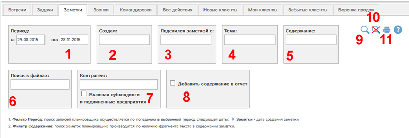
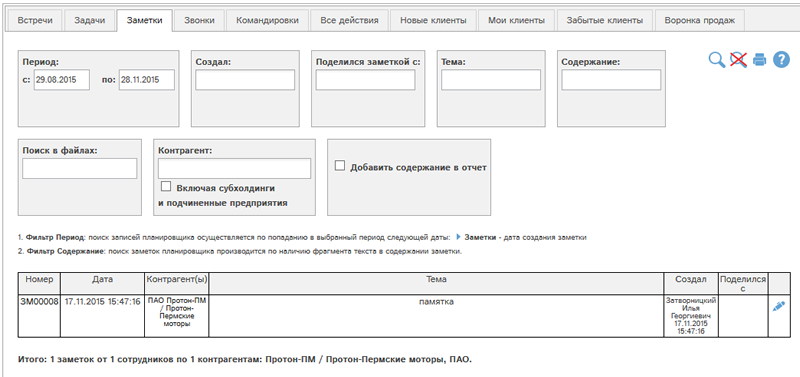

Отчет позволяет получить данные о заметках, доступных Вам в планировщике.

Рис. Форма отчета Заметки.
Доступны следующие фильтры и кнопки:
- Период - заметки отбираются по попаданию даты создания в указанный период
- Отбор по сотруднику, создавшему заметку (можно выбрать несколько сотрудников)
- Отбор по сотруднику, кому была открыта заметка в блоке "Поделиться" (можно выбрать несколько сотрудников)
- Отбор по фрагменту темы
- Отбор по фрагменту содержания
- Искать по фрагменту в приложенных файлах. Поиск по вложенным файлам доступен для файлов следующих типов: txt, docx, xlsx, xls, csv, pptx.
- Отбор по связанным с заметкой контрагентам. Галочка "Включая субхолдинги и подчиненные предприятия" позволяет выбрать в отчет также данные по субхолдингам и подчиненным предприятиям выбранных контрагентов.
- Добавить содержание заметки в отчет
- Показать отчет по выбранным фильтрам
- Сбросить все фильтры
- Получить печатную версию отчета по выбранным фильтрам в pdf-формате.
Рассмотрим пример отчета с отмеченным фильтром (8) и остальными значениями фильтров по умолчанию. Для этого отметим фильтр (8) и нажмем кнопку  :
:
